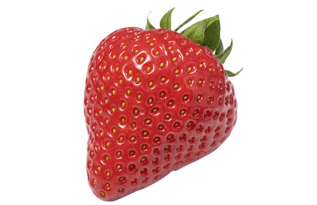

Les fraises sont des fruits rouges juteux et aromatiques, très appréciés pour leur goût sucré
et leur parfum distinctif. Elles sont souvent dégustées fraîches, utilisées dans une multitude
de desserts comme les tartes et les smoothies, ou incorporées dans des salades. En plus d'être
délicieuses, les fraises sont une excellente source de vitamine C, de fibres et d'antioxydants,
contribuant ainsi à la santé cardiovasculaire et à l'amélioration de la peau.
